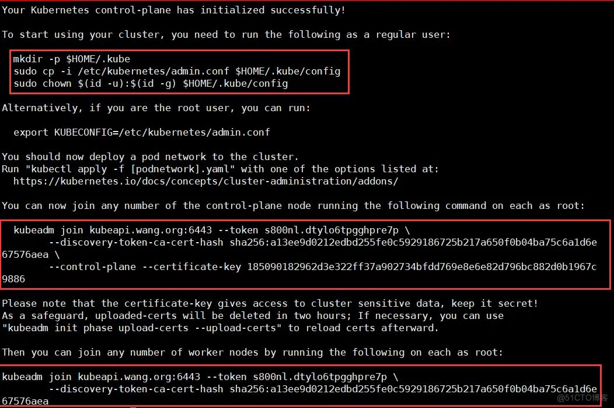

使用 kubeadm 部署 kubernetes v1.25.3
基于 docker 和 cri-dockerd 部署 kubernetes v1.25.3
环境准备
主机清单
| 主机名 | IP地址 | 系统版本 |
|---|---|---|
| master01 | 192.168.0.11 | Ubuntu 22.04.2 LTS |
| master02 | 192.168.0.12 | Ubuntu 22.04.2 LTS |
| master03 | 192.168.0.13 | Ubuntu 22.04.2 LTS |
| node01 | 192.168.0.31 | Ubuntu 22.04.2 LTS |
| node02 | 192.168.0.32 | Ubuntu 22.04.2 LTS |
| node03 | 192.168.0.33 | Ubuntu 22.04.2 LTS |
系统基础环境
重置 root 密码
sudo passwd root
关闭防火墙
#所有节点执行：
root@master01:~# ufw disable
root@master01:~# ufw status
时间同步
#所有节点执行：
root@master01:~# apt install -y chrony
root@master01:~# systemctl restart chrony
root@master01:~# systemctl status chrony
root@master01:~# chronyc sources
主机名互相解析
#所有节点执行：
root@master01:~# cat /etc/hosts
127.0.0.1 localhost
127.0.1.1 master01
# The following lines are desirable for IPv6 capable hosts
::1 ip6-localhost ip6-loopback
fe00::0 ip6-localnet
ff00::0 ip6-mcastprefix
ff02::1 ip6-allnodes
ff02::2 ip6-allrouters
192.168.50.101 master01 master01.keti.org kubeapi.keti.org kubeapi
192.168.50.102 master02 master02.keti.org
192.168.50.103 master03 master03.keti.org
192.168.50.111 node01 node01.keti.org
192.168.50.112 node02 node02.keti.org
192.168.50.113 node03 node03.keti.org
root@master01:~#
禁用swap
#所有节点执行：
root@master01:~# sed -r -i '/\\/swap/s@^@#@' /etc/fstab
root@master01:~# swapoff -a
root@master01:~# systemctl --type swap
#若不禁用Swap设备，需要在后续编辑kubelet的配置文件/etc/default/kubelet，设置其忽略Swap启用的状态错误，内容：KUBELET_EXTRA_ARGS="--fail-swap-on=false"
安装docker
https://developer.aliyun.com/mirror/docker-ce?spm=a2c6h.13651102.0.0.57e31b11Kkm0VH
#所有节点执行：
#kubelet需要让docker容器引擎使用systemd作为CGroup的驱动，其默认值为cgroupfs，因而，我们还需要编辑docker的配置文件/etc/docker/daemon.json，添加如下内容，其中的registry-mirrors用于指明使用的镜像加速服务。
root@master01:~# mkdir /etc/docker
root@master01:~# vim /etc/docker/daemon.json
{
"registry-mirrors": [
"<https://docker.mirrors.ustc.edu.cn>",
"<https://hub-mirror.c.163.com>",
"<https://reg-mirror.qiniu.com>",
"<https://registry.docker-cn.com>"
],
"data-root": "/new/docker/data",
"insecure-registries": ["harbor.ketitx.com"],
"exec-opts": ["native.cgroupdriver=systemd"],
"log-driver": "json-file",
"log-opts": {
"max-size": "200m"
},
"storage-driver": "overlay2"
}
root@master01:~# systemctl daemon-reload
root@master01:~# systemctl start docker
root@master01:~# systemctl enable docker
root@master01:~# docker version
Client: Docker Engine - Community
Version: 20.10.21
#注：kubeadm部署Kubernetes集群的过程中，默认使用Google的Registry服务k8s.gcr.io上的镜像,由于2022年仓库已经改为registry.k8s.io，国内可以直接访问，所以现在不需要镜像加速或者绿色上网就可以拉镜像了
安装cri-dockerd
#所有节点执行：
# 下载地址：<https://github.com/Mirantis/cri-dockerd>
root@master01:~# apt install ./cri-dockerd_0.3.9.3-0.ubuntu-jammy_amd64.deb -y
#完成安装后，相应的服务cri-dockerd.service便会自动启动
root@master01:~# systemctl status cri-docker.service
安装kubeadm、kubelet和kubectl
#所有节点执行：
#在各主机上生成kubelet和kubeadm等相关程序包的仓库，可参考阿里云官网
root@master01:~# apt update
root@master01:~# apt install -y apt-transport-https curl
root@master01:~# curl <https://mirrors.aliyun.com/kubernetes/apt/doc/apt-key.gpg> | apt-key add -
root@master01:~# cat <<EOF >/etc/apt/sources.list.d/kubernetes.list
> deb <https://mirrors.aliyun.com/kubernetes/apt/> kubernetes-xenial main
> EOF
#更新仓库并安装
root@master01:~# apt update
root@master01:~# apt install -y kubelet kubeadm kubectl
#注意：先不要启动，只是设置开机自启动
root@master01:~# systemctl enable kubelet
#确定kubeadm等程序文件的版本
root@master01:~# kubeadm version
kubeadm version: &version.Info{Major:"1", Minor:"25", GitVersion:"v1.25.3", GitCommit:"434bfd82814af038ad94d62ebe59b133fcb50506", GitTreeState:"clean", BuildDate:"2022-10-12T10:55:36Z", GoVersion:"go1.19.2", Compiler:"gc", Platform:"linux/amd64"}
整合kubelet和cri-dockerd
配置cri-dockerd
#所有节点执行：
root@master01:~# vim /usr/lib/systemd/system/cri-docker.service
#ExecStart=/usr/bin/cri-dockerd --container-runtime-endpoint fd://
ExecStart=/usr/bin/cri-dockerd --pod-infra-container-image=registry.aliyuncs.com/google_containers/pause:3.9 --container-runtime-endpoint fd:// --network-plugin=cni --cni-bin-dir=/opt/cni/bin --cni-cache-dir=/var/lib/cni/cache --cni-conf-dir=/etc/cni/net.d
#说明：
需要添加的各配置参数（各参数的值要与系统部署的CNI插件的实际路径相对应）：
--network-plugin：指定网络插件规范的类型，这里要使用CNI；
--cni-bin-dir：指定CNI插件二进制程序文件的搜索目录；
--cni-cache-dir：CNI插件使用的缓存目录；
--cni-conf-dir：CNI插件加载配置文件的目录；
配置完成后，重载并重启cri-docker.service服务。
root@master01:~# systemctl daemon-reload && systemctl restart cri-docker.service
root@master01:~# systemctl status cri-docker
配置kubelet
#所有节点执行：
#配置kubelet，为其指定cri-dockerd在本地打开的Unix Sock文件的路径，该路径一般默认为“/run/cri-dockerd.sock“
root@master01:~# mkdir /etc/sysconfig
root@master01:~# vim /etc/sysconfig/kubelet
KUBELET_KUBEADM_ARGS="--container-runtime=remote --container-runtime-endpoint=/run/cri-dockerd.sock"
root@master01:~# cat /etc/sysconfig/kubelet
KUBELET_KUBEADM_ARGS="--container-runtime=remote --container-runtime-endpoint=/run/cri-dockerd.sock"
#说明：该配置也可不进行，而是直接在后面的各kubeadm命令上使用“--cri-socket unix:///run/cri-dockerd.sock”选项
初始化第一个主节点
#第一个主节点执行：
#列出k8s所需要的镜像
root@master01:~# kubeadm config images list
registry.k8s.io/kube-apiserver:v1.25.3
registry.k8s.io/kube-controller-manager:v1.25.3
registry.k8s.io/kube-scheduler:v1.25.3
registry.k8s.io/kube-proxy:v1.25.3
registry.k8s.io/pause:3.8
registry.k8s.io/etcd:3.5.4-0
registry.k8s.io/coredns/coredns:v1.9.3
#使用阿里云拉取所需镜像
root@master01:~# kubeadm config images pull --image-repository=registry.aliyuncs.com/google_containers --cri-socket unix:///run/cri-dockerd.sock
root@master01:~# docker images
REPOSITORY TAG IMAGE ID CREATED
registry.aliyuncs.com/google_containers/kube-apiserver v1.25.3 0346dbd74bcb 3 weeks ago
registry.aliyuncs.com/google_containers/kube-scheduler v1.25.3 6d23ec0e8b87 3 weeks ago
registry.aliyuncs.com/google_containers/kube-controller-manager v1.25.3 603999231275 3 weeks ago
registry.aliyuncs.com/google_containers/kube-proxy v1.25.3 beaaf00edd38 3 weeks ago
registry.aliyuncs.com/google_containers/pause 3.8 4873874c08ef 4 months ago
registry.aliyuncs.com/google_containers/etcd 3.5.4-0 a8a176a5d5d6 5 months ago
registry.aliyuncs.com/google_containers/coredns v1.9.3 5185b96f0bec 5 months ago
root@master01:~# kubeadm init --control-plane-endpoint="kubeapi.keti.org" --kubernetes-version=v1.28.3 --pod-network-cidr=10.244.0.0/16 --service-cidr=10.96.0.0/12 --token-ttl=0 --cri-socket unix:///run/cri-dockerd.sock --upload-certs --image-repository registry.aliyuncs.com/google_containers
#如提示以下信息，代表初始化完成，请记录信息，以便后续使用：
.....
Your Kubernetes control-plane has initialized successfully!
To start using your cluster, you need to run the following as a regular user:
mkdir -p $HOME/.kube
sudo cp -i /etc/kubernetes/admin.conf $HOME/.kube/config
sudo chown $(id -u):$(id -g) $HOME/.kube/config
Alternatively, if you are the root user, you can run:
export KUBECONFIG=/etc/kubernetes/admin.conf
You should now deploy a pod network to the cluster.
Run "kubectl apply -f [podnetwork].yaml" with one of the options listed at:
<https://kubernetes.io/docs/concepts/cluster-administration/addons/>
You can now join any number of the control-plane node running the following command on each as root:
kubeadm join kubeapi.keti.org:6443 --token 7vz1y4.zau5k844iwlymn64 \\
--discovery-token-ca-cert-hash sha256:f34832cc625fe84d221b29ed47ed779b045f3b96a10cda557652318e8e2736f2 \\
--control-plane --certificate-key 78302917bded5c279bafcde99f11a33b3b9d57d8f43d26f578ff0c304fbe61fd
Please note that the certificate-key gives access to cluster sensitive data, keep it secret!
As a safeguard, uploaded-certs will be deleted in two hours; If necessary, you can use
"kubeadm init phase upload-certs --upload-certs" to reload certs afterward.
Then you can join any number of worker nodes by running the following on each as root:
kubeadm join kubeapi.keti.org:6443 --token 7vz1y4.zau5k844iwlymn64 \\
--discovery-token-ca-cert-hash sha256:f34832cc625fe84d221b29ed47ed779b045f3b96a10cda557652318e8e2736f2
root@master01:~# mkdir -p $HOME/.kube
root@master01:~# sudo cp -i /etc/kubernetes/admin.conf $HOME/.kube/config
root@master01:~# sudo chown $(id -u):$(id -g) $HOME/.kube/config

#如果初始化报如下错误：
Error getting node" err="node \\"k8s-master01\\" not found
#1、在cri-docker.service文件指定下pause版本：
root@master01:~# vim /usr/lib/systemd/system/cri-docker.service
ExecStart=/usr/bin/cri-dockerd --pod-infra-container-image=registry.aliyuncs.com/google_containers/pause:3.8 --container-runtime-endpoint fd:// --network-plugin=cni --cni-bin-dir=/opt/cni/bin --cni-cache-dir=/var/lib/cni/cache --cni-conf-dir=/etc/cni/net.d
#2、重启服务：
root@master01:~# systemctl daemon-reload
root@master01:~# systemctl restart cri-docker.service
#3、重置集群：
root@master01:~# kubeadm reset --cri-socket unix:///run/cri-dockerd.sock && rm -rf /etc/kubernetes/ /var/lib/kubelet /var/lib/dockershim /var/run/kubernetes /var/lib/cni /etc/cni/net.d
部署网络插件
我选择了使用 Flannel，也可以自行选择 Calico、Cilium等插件。
#所有节点执行：
#下载链接：
<https://github.com/flannel-io/flannel/releases>
root@master01:~# mkdir /opt/bin
root@master01:~# cp flanneld-amd64 /opt/bin/flanneld
root@master01:~# chmod +x /opt/bin/flanneld
root@master01:~# ll /opt/bin/flanneld
-rwxr-xr-x 1 root root 39358256 11月 4 22:46 /opt/bin/flanneld*
#第一个主节点执行：
#部署kube-flannel
root@master01:~# kubectl apply -f <https://raw.githubusercontent.com/flannel-io/flannel/master/Documentation/kube-flannel.yml>
namespace/kube-flannel created
clusterrole.rbac.authorization.k8s.io/flannel created
clusterrolebinding.rbac.authorization.k8s.io/flannel created
serviceaccount/flannel created
configmap/kube-flannel-cfg created
daemonset.apps/kube-flannel-ds created
#确认Pod的状态为“Running”
root@master01:~# kubectl get pods -n kube-flannel
NAME READY STATUS RESTARTS AGE
kube-flannel-ds-9bkgl 1/1 Running 0 50s
#此时，k8s-master01已经就绪
root@master01:~# kubectl get nodes
NAME STATUS ROLES AGE VERSION
k8s-master01 Ready control-plane 20m v1.25.3
添加其他节点到集群中
#k8s-master02和k8s-master03执行：
#k8s-master02和k8s-master03加入集群
root@master01:~# kubeadm join kubeapi.wang.org:6443 --token s800nl.dtylo6tpgghpre7p --discovery-token-ca-cert-hash sha256:a13ee9d0212edbd255fe0c5929186725b217a650f0b04ba75c6a1d6e67576aea --control-plane --certificate-key 185090182962d3e322ff37a902734bfdd769e8e6e82d796bc882d0b1967c9886 --cri-socket unix:///run/cri-dockerd.sock
#注意，命令需要加上--cri-socket unix:///run/cri-dockerd.sock
#k8s-node01、k8s-node02、k8s-node03执行
#node节点加入集群
root@master01:~# kubeadm join kubeapi.wang.org:6443 --token s800nl.dtylo6tpgghpre7p --discovery-token-ca-cert-hash sha256:a13ee9d0212edbd255fe0c5929186725b217a650f0b04ba75c6a1d6e67576aea --cri-socket unix:///run/cri-dockerd.sock
#注意，命令需要加上--cri-socket unix:///run/cri-dockerd.sock
#第一节点验证节点添加结果
root@master01:~# kubectl get nodes
NAME STATUS ROLES AGE VERSION
k8s-master01 Ready control-plane 25m v1.25.3
k8s-master02 Ready control-plane 10m v1.25.3
k8s-master03 Ready control-plane 8m41s v1.25.3
k8s-node01 Ready <none> 6m54s v1.25.3
k8s-node02 Ready <none> 6m31s v1.25.3
k8s-node03 Ready <none> 6m5s v1.25.3
部署应用测试
部署nginx pod测试
root@master01:~# kubectl create deployment nginx --image nginx:alpine --replicas=3
deployment.apps/nginx created
root@master01:~# kubectl get pods
NAME READY STATUS RESTARTS AGE
nginx-55f494c486-4js9n 1/1 Running 0 58s
nginx-55f494c486-fsgxq 1/1 Running 0 58s
nginx-55f494c486-z2gzv 1/1 Running 0 58s
root@master01:~# kubectl get pods -o wide
NAME READY STATUS RESTARTS AGE IP NODE NOMINATED NODE READINESS GATES
nginx-55f494c486-4js9n 1/1 Running 0 4m31s 10.244.3.2 k8s-node01 <none> <none>
nginx-55f494c486-fsgxq 1/1 Running 0 4m31s 10.244.4.2 k8s-node02 <none> <none>
nginx-55f494c486-z2gzv 1/1 Running 0 4m31s 10.244.5.2 k8s-node03 <none> <none>
root@master01:~# curl 10.244.4.2
<!DOCTYPE html>
<html>
<head>
<title>Welcome to nginx!</title>
<style>
html { color-scheme: light dark; }
body { width: 35em; margin: 0 auto;
font-family: Tahoma, Verdana, Arial, sans-serif; }
</style>
</head>
<body>
<h1>Welcome to nginx!</h1>
<p>If you see this page, the nginx web server is successfully installed and
working. Further configuration is required.</p>
<p>For online documentation and support please refer to
<a href="<http://nginx.org/>">nginx.org</a>.<br/>
Commercial support is available at
<a href="<http://nginx.com/>">nginx.com</a>.</p>
<p><em>Thank you for using nginx.</em></p>
</body>
</html>
#删除pod，自动拉起
root@master01:~# kubectl delete pods nginx-55f494c486-fsgxq
pod "nginx-55f494c486-fsgxq" deleted
root@master01:~# kubectl get pods -owide
NAME READY STATUS RESTARTS AGE IP NODE NOMINATED NODE READINESS GATES
nginx-55f494c486-4js9n 1/1 Running 0 11m 10.244.3.2 k8s-node01 <none> <none>
nginx-55f494c486-xqcph 1/1 Running 0 16s 10.244.4.3 k8s-node02 <none> <none>
nginx-55f494c486-z2gzv 1/1 Running 0 11m 10.244.5.2 k8s-node03 <none> <none>
root@master01:~# kubectl create service nodeport nginx --tcp=80:80
service/nginx created
root@master01:~# kubectl get svc
NAME TYPE CLUSTER-IP EXTERNAL-IP PORT(S) AGE
kubernetes ClusterIP 10.96.0.1 <none> 443/TCP 89m
nginx NodePort 10.103.151.47 <none> 80:31901/TCP 18s
root@master01:~# curl 10.103.151.47
<!DOCTYPE html>
<html>
<head>
<title>Welcome to nginx!</title>
<style>
html { color-scheme: light dark; }
body { width: 35em; margin: 0 auto;
font-family: Tahoma, Verdana, Arial, sans-serif; }
</style>
</head>
<body>
<h1>Welcome to nginx!</h1>
<p>If you see this page, the nginx web server is successfully installed and
working. Further configuration is required.</p>
<p>For online documentation and support please refer to
<a href="<http://nginx.org/>">nginx.org</a>.<br/>
Commercial support is available at
<a href="<http://nginx.com/>">nginx.com</a>.</p>
<p><em>Thank you for using nginx.</em></p>
</body>
</html>
#外部访问任意node几点ip加端口（注意，随机产生）都可以访问
Q&A
kubeadm init error: CRI v1 runtime API is not implemented
Hi, I'll write this post to help anyone encountering my same issue, given that I could not find the solution in past forum discussions.
I'm following the installation PDF for the class, exactly with all required versions: Ubuntu 20.04 (on a Google Cloud VM), kubeadm 1.24.1, etc.
But when executing the kubeadm init command I got the following error:
[init] Using Kubernetes version: v1.24.1
[preflight] Running pre-flight checks
error execution phase preflight: [preflight] Some fatal errors occurred:
[ERROR CRI]: container runtime is not running: output: time="2023-01-19T15:05:35Z" level=fatal msg="validate service connection: CRI v1 runtime API is not implemented for endpoint \\"unix:///var/run/containerd/containerd.sock\\": rpc error: code = Unimplemented desc = unknown service runtime.v1.RuntimeService"
, error: exit status 1
[preflight] If you know what you are doing, you can make a check non-fatal with `--ignore-preflight-errors=...`
To see the stack trace of this error execute with --v=5 or higher
By searching the web it appears this is an issue with the old containerd provided by Ubuntu 20.
I solved it with the following steps (as root):
- Set up the Docker repository as described in https://docs.docker.com/engine/install/ubuntu/#set-up-the-repository
- Remove the old containerd:
apt remove containerd - Update repository data and install the new containerd:
apt update,apt install containerd.io - Remove the installed default config file:
rm /etc/containerd/config.toml - Restart containerd:
systemctl restart containerd
The kubeadm init command worked fine afterwards.